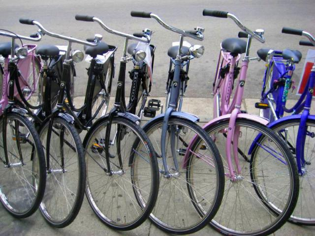
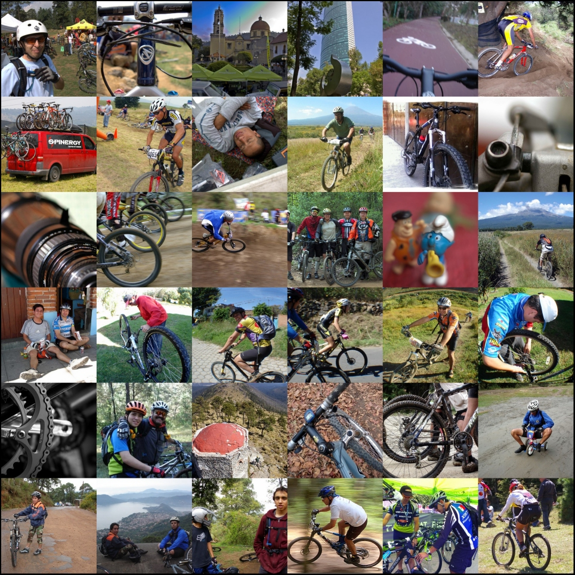

Visita las páginas:
Es un buen ejercicio aeróbico que combate los riesgos de sufrir sobre pero u obesidad.
Ayuda al sistema cardiovascular y tonifica los músculos.
Reduce los niveles de estrés, ocasionando que tengas un mejor estado de ánimo.
Puedes ayudar a reducir los niveles de monóxido y dióxido de carbono que provocan la contaminación del aire.
Promover novedosos proyectos para la implementación de ciclo vías.
El uso de las bicicletas promueve estilos de vida saludables para las personas.
Ahorraras todo el dinero que gastas en combustible, peaje y mantenimiento en el caso tengas un automóvil.
También podrás ahorrar todos los pasajes de transporte público en caso no tengas un auto.
Las bicicletas de montaña (también conocidas como MTB) están diseñadas para “fuera de ruta” por lo que son bastante resistentes. Están equipadas con llantas anchas con dibujos marcados para mejorar el agarre en terrenos sueltos. Regularmente usan manubrios rectos o de doble altura. Las MTB se pueden encontrar sin suspensión (rígidas), con suspensión delantera (hardtail) o con doble suspensión (full-suspension) dependiendo de su especialidad: Cross country, Enduro, Downhill, Freeride.
Son bicicletas orientadas a obtener velocidad en pavimento, de construcción más ligera que otras bicicleta, están dotadas con ruedas más grandes, delgadas y provistas de llantas angostas y con dibujo liso. Las bicis de ruta utilizan manubrios drop-bar para lograr una postura más aerodinámica.
Las bicicletas híbridas son bastante versátiles ya que combinan características de las bicis de montaña y de las de ruta. Estas bicicletas nacieron como una solución para quienes necesitan una bicicleta para la ciudad, pero que tenga la flexibilidad de ser usada en diferentes terrenos. Los cuadros son resistentes y con una geometría que permite adoptar una posición cómoda que permite relajar los brazos y el cuello
En este caso nos referimos como bicicleta urbana a las bicis estilo holandés (Dutch). Estas bicicletas fueron concebidas para la ciudad, por lo que son de construcción bastante solida tanto en su cuadro como en sus ruedas. Están perfectamente adecuadas para soportar las condiciones de una ciudad (baches, banquetas, topes, etc.) Por lo general cuenta con guardabarros para días de lluvia, portaequipaje y/o canasta para transportar todo lo que necesitas para ir al trabajo, al supermercado, etc. Una característica común en este tipo de bicicletas es la presencia de luces para mantenernos siempre visibles a los conductores. Normalmente tienen una sola velocidad, o sistema de cambios internos de ser necesario Estas bicicletas permiten una posición relajada de torso y brazos.
La gran mayoría de estas bicicletas usan ruedas pequeñas, siendo 16 y 20″ las más comunes, aunque es posible encontrar plegables con rodados más convencionales. Casi todas las plegables están diseñadas para uso urbano, no obstante existen modelos que aguantan viajes largos sin problemas. Un inconveniente de de las ruedas pequeñas es que son más sensibles a las imperfecciones del camino, aunque si lo que necesitas es una bici que puedes llevar contigo en todo momento no hay como una plegable. En general vienen equipadas con 18- 20 cambios.
Cómo no podía ser de otra manera encabeza la lista la prestigiosa marca americana. La firma de la “s” es, indiscutiblemente, y por méritos propios, la mejor marca de bicicletas del mundo. A su favor juega la indudable calidad de todos sus productos y el enorme prestigio del que goza entre los usuarios del mundo ciclista. Los de Morgan Hill llevan años jugando en otra liga y son referentes en absolutamente todas las facetas de mercado. Cuadros de bicicleta, componentes, ropa y complementos. Su cuota de mercado, especialmente en bicicletas de gama media-alta es espectacular y sus ventas por todo el mundo lo atestiguan.
La marca Suiza sigue creciendo y parece dispuesta a seguir el camino de Specialized ampliando su cartera de productos a prácticamente todo el sector ciclista. Scott ya fábrica a día de hoy, además de bicicletas, cascos, zapatillas, gafas y ropa entre otros complementos, consiguiendo así fidelizar gran parte de sus clientes.
Trek es una de las mejores marcas del mercado, y pese a su bajón mediático con la polémica de Lance Armstrong, siempre ha sido una de las más populares entre los aficionados al mundo del ciclismo. Esto le permite vender gran cantidad de bicicletas de todo a tipo y a todo el mundo, gozando de una excelente presencia en el mercado americano. Precisamente con el fin de corregir esa mala imagen que les dejo Lance Armstrong, decidieron crear su propio equipo ciclista profesional (Trek Segafredo) y volver a cambiar, junto a la figura de Alberto Contador, su imagen de marca. Tras su retirada podría ser uno de sus embajadores de la marca a nivel mundial.
En cuarta posición tenemos al mayor fabricante de bicicletas del mundo (fabrica también para terceros). La empresa con sede en Taiwan es un referente en cuanto a comodidad. Sus bicicletas son tremendamente cómodas y pese a que sus diseños y geometrías no han sido, hasta el momento, demasiado agresivas, siguen gustando a un público más clásico. Giant ha sido pionero en el mundo ciclista, por ejemplo inventando la primera bicicleta de carretera con sloping bajo. La valoración de aquellos que han tenido una Giant generalmente es muy buena.
La quinta posición está ocupada por un “rara avis” del sector. Canyon es la única marca de bicicletas que solo vende por internet y que no ofrece sus bicicletas en tienda física. Pese a contar, a priori, con este “hándicap” la marca es conocida por prácticamente todos los ciclistas de carretera y la enorme calidad de sus productos goza de una muy buena consideración entre los aficionados y profesionales del sector.
